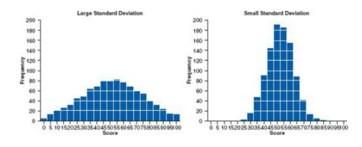
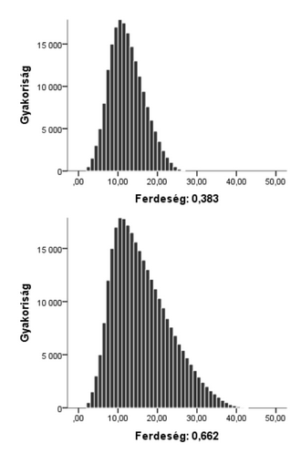
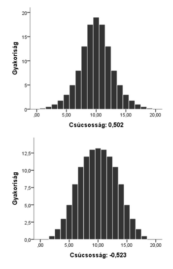
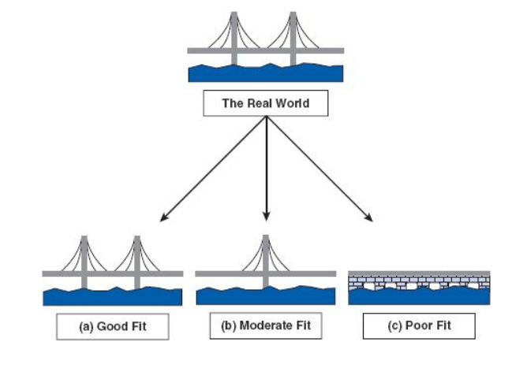
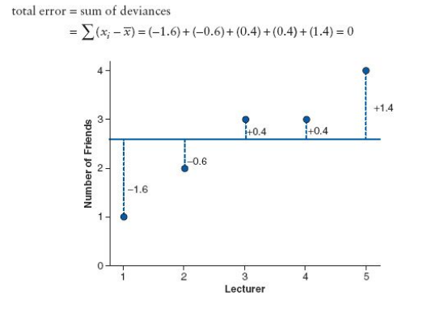
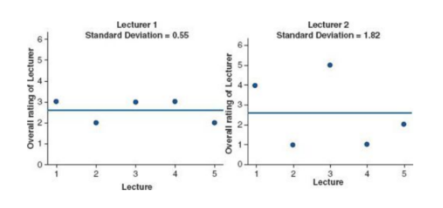
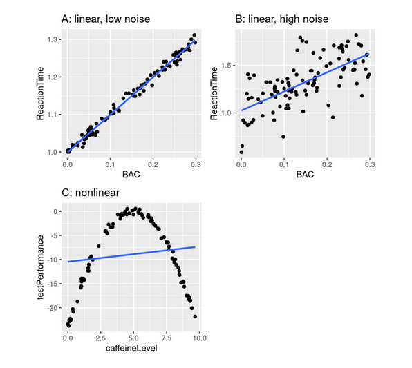
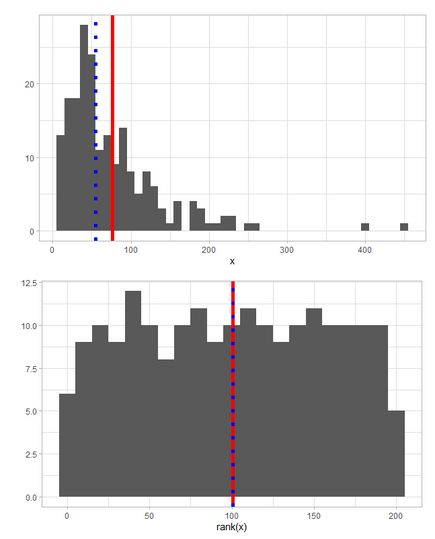

3 Leíró statisztika
Az órán a statisztikának két fő ágával foglalkozunk, a leíró és a követeztetéses statisztikával
A leíró statisztikának a célja a minta összefoglalása
- Gyakoriságok, százalékok, csoport átlagok és szórások, stb. által
A következtetéses statisztika célja a minta alapján következtetéseket tenni a populációra
Az adatokkal való munka során az adatok valamilyen formában történő összesítését végezzük
Erre azért van szükség, mert az emberek nem képesek a nyers adatokból jól következtetéseket levonni
A folyamat során elkerülhetetlenül elveszik valamennyi információ, ám lehetőségünk nyílik átlátni a részletek mögött rejlő összefüggéséket és általánosítani azokból
Az adatösszesítésnek többféle módja lehet
Ez függ a vizsgált kérdéstől
És az adatok milyenségétől (például az egyes változók típusától)
3.1 Értékek eloszlása
Az adatok leírásának egyik módja az eloszlásuk vizsgálata
- Ez alapján meg tudjuk mondani, hogy mely értékek gyakoriak és melyek ritkák az adattáblánkban
Az eloszlás megmondja, hogyan oszlik meg az adat a különböző lehetséges értékek között
- Például: diszkrét változó esetén hányan választották az egyes lehetséges opciókat
3.1.1 Gyakorisági eloszlás
A gyakorisági eloszlás megmondja, hogy egy változó lehetséges értékei milyen gyakran fordulnak elő a mintánkban
Diszkrét változó gyakorisági eloszlása
Az adatok abszolút gyakoriságát egy összesítő táblázatba is foglalhatjuk
Ahhoz, hogy meg tudjuk mondani a gyakoriságok között különbség valóban lényeges-e hasznos lehet megtekinteni a relatív frekvenciájukat (sűrűségüket)
Ehhez minden lehetséges értékhez el kell osztani az abszolút gyakoriságot a változóban található összes érték számával
Hogyan ábrázoljuk a gyakoriságot?
Dotplot
Minden értéket egy pötty jelöl
Az x tengely az értéktartomány
Az y tengely a gyakoriság
Folytonos változónál az összesítés során az értéktartományt különböző méretű “vödrökre” osztjuk
Meghatározzuk a vödrök szélességét (binwidth)
És az ebbe az értéktartományba eső értékek gyakoriságát számoljuk meg és ábrázoljuk
A hisztogram hasonló, mint a dotplot
- De az egyes értékek nem jelennek meg külön, így sok adat gyakoriságát egyszerre tudjuk ábrázolni
3.1.1.1 A normál eloszlás
A megfigyelt adatokban lévő változók eloszlását empirikus eloszlásnak nevezzük
Azonban vannak nevezetes elméleti eloszlások, amelyknek a paramétereit már ismerjük (például a normál eloszlás)
Mivel ezen eloszlások paramétereit ismerjük, sokszor ezeket az eloszlásokat használjuk fel arra, hogy következtetéseket vonjunk le a populációra a mintánk alapján
Ennek előfeltétele azonban, hogy a mintánkban lévő empirikus eloszlások kellőképp hasonlítsanak a nevezetes eloszlásokhoz
Az elméleti normál eloszlásnak paraméterei
Egy csúcsa van, az átlagnál, ami 0
A szórása, ami az adatpontok átlag körüli szóródását jelöli 1
- Lásd: Figure 3.1 (Field, Miles, and Field (2017))
Az eloszlás szimmetrikus
- Az ettől való eltérést a ferdeséggel és csúcsossággal jelöljük
3.1.1.2 Ferdeség és csúcsosság
Az elméleti normál eloszlás ferdesége 0
Az ettől való eltérés lehet pozitív és negatív irányú attól függően, hogy az eloszlás az X tengely mentén melyik irányba tolódik el
Ha a változónk ferdesége nagyobb 0-nál, akkor az eloszlás nem szimmetrikus, tehát eltér az elméleti normál eloszlástól
Lásd: Figure 3.2
Az elméleti normál eloszlás csúcsossága 0
Az empirikus eloszlásunk ehhez képest lehet csúcsos vagy lapos
Lásd: Figure 3.3


3.1.1.3 Kumulatív gyakorisági eloszlás
Azon értékek gyakorisága amelyek akkor vagy kevesebbek, mint az adott határérték, amit vizsgálunk
Kiszámolásához összeadjuk a hátárétrék gyakoriságát és az összes nála kisebb érték gyakoriságát
Értéke soha nem csökkenhet
3.2 Statisztikai modellek
Leegyszerüsített reprezentációja az adatoknak
Leírja az adatok struktúráját
Mindig van benne hiba faktor, kihagy részleteket
- Lásd: Figure 3.4 (Field, Miles, and Field (2017))
“All models are wrong but some are useful” (George Box)
A statisztikai modellre gondolhatunk úgy is, mint egy elméletre, amely leírja hogyan keletkeztek az adatok
Célunk: olyan modellt alkossunk, ami hatékonyan és pontosan írja le az adatok keletkezésének a módját
Másszóval, fontos, hogy a modell jól illeszkedjen az adatokra
- Minél jobban illeszkedik a modell az adatokhoz (a valósághoz), annál megbízhatóbbak a modell által létrehozott predikciók
Mivel minden modell a valóság leegyszerüsítése, így az soha nem fogja tökéletesen reprezentálni a valóságot
- Lesz hiba a modell által prediktált értékek és az egyes megfigyelések között
Adat = modell + hiba
Modell: az értékek, amit az elméletünk alapján elvárunk
Hiba: a modell által prediktált értékek és a valós adatpontok közötti különbség

3.2.1 A legegyszerűbb statisztika modell, az átlag
Minden megfigyelésre ugyanazt az értéket prediktálja
Példa
Vizsgálhatjuk például, hogy a statisztika tanároknak hány barátja van
Tegyük fel, hogy 5 tanárt kérdezünk meg
Az átlag: (1 + 2 + 3 + 3 + 4)/5 = 2.6
Ebből is látszik, hogy az átlag egy statisztikai modell, hiszen egy hipotetikus érték, nem megfigyelhető a valóságban
Lásd: Figure 3.5 (Field, Miles, and Field (2017))

3.2.2 Modell illeszkedésének a vizsgálata
Hogyan tudjuk megvizsgálni, hogy mennyire jól illeszkedik az átlag, mint modell, az adatokra?
Ahhoz, hogy eldöntsük a modell jól írja-e le az adatokat, megnézhetjük a megfigyelt adatok és a modell értékei közötti különbséget
Ezen értékek közötti eltérés a modell hibája
Például annál a kutatónál, akinek egy barátja van, a modell 2.6 barátot prediktál (ez volt az átlag), a modell hibája, azaz az eltérés, így megfigyelt értél - prediktált érték = -1.6
Ebben az esetben a modell felül becsüli a kutató népszerűségét!
Hogyan összesítsük az egyes eltéréseket, hogy meg tudjuk határozni a modellünk pontosságát?
Például összeadhatjuk őket (sum of errors)
Ebben az esetben azt látjuk, hogy az eltérések összege 0
Ez alapján arra következtethetnénk, hogy az átlag tökéletesen reprezentálja az adatokat, azonban az ábrára ránézve láthatjuk, hogy ez nem így van
az egyes értékek és a modell által prediktált értékek között van különbség
- Még egy ok az ábrázolás fontossága mellett!
A negatív és a pozitív előjelű eltérések kiegyenlítették egymást
Ezt elkerülendő négyzetre emelhetjük az eltéréseket az összeadás előtt (sum of squared errors)
Így minden eltérés előjele pozitív lesz
A példánkban a négyzetes eltérések összege 5.20
Most azonban abba a problémába ütközünk, hogy a modell pontosságának mérője függ a mintánk méretétől
Minél több megfigyelésünk van, annál nagyobb lesz a modell hiba
Ezt elkerülhetjük úgy, hogy összeadás helyett a négyzetes eltérések átlagát vesszük (mean of squared errors)
Ehhez elosztjuk a négyzetes eltérések összegét a megfigyelések számával
Így azonban csak a mintánkban lévő átlagos hibát számszerüsítjük
Azonban célunk, hogy a mintában lévő hibából a populációban található hibát becsüljük meg
Ehhez a minta mérete helyett a szabadságfokkal kell elosztanunk a négyzetes eltérések összegét
Jelen esetben ez n - 1
Ezt nevezzük varianciának
Átlagos négyzetes eltérés az átlagtól
A varianciával a probléma, hogy a mértékegysége az adatok skálájának négyzete
A példánkban 1.3
- Négyzetes barátok száma nehezen értelmezhető!
Ezt elkerülhetjük úgy, hogy a variancia gyökét vesszük, ez a szórás
Így a modell hibájának mérője ugyanazt a skálát használja, mint a megfigyeléseink
Az átlaghoz képest kis szórás azt mutatja, hogy a modellunk jól illeszkedik az adatokra
- A megfigyelések közel vannak az átlaghoz
Példa
Megkérhetjük a hallgatókat, hogy egy 5-ös skálán értékeljék az egyes statisztika oktatókat
A mérést elvégezhetjük 5 egymást követő órán
Az ábrán két oktatónak öt óráján mért összesített értékelései láthatók
Ha az átlagot használjuk, mint statisztikai modellt, mind a két oktatónál ugyanazt az átlagot kapjuk
Mégis látható, hogy az egyik oktatónál a modell jobban illeszkedik az adatokhoz, tehát az átlag pontos reprezentációja az adatoknak
- Ezt mutatja, hogy a szórás 0.55 az átlaghoz mérten kicsi
- Lásd: Figure 3.6 (Field, Miles, and Field (2017))

3.2.3 Mitől jó egy statisztikai modell?
1) kicsi a hiba
Mitől lehet nagy a hiba?
Rossz a modell
Kimaradt egy fontos prediktor változó
A prediktor változó hatásának irányát rosszul adtuk meg
- Pl: azt feltételezi a modell minél idősebb valaki annál alacsonyabb gyerekek körében
Az adatok vizualizációja fontos, hogy jól specifikált modellt tudjunk építeni
Mérés hiba/zaj/adatokban lévő variancia miatt
Vagy a mérőeszköz nem elég pontos
Vagy egyébb faktorok is befolyásolják a megfigyelt mérésekben lévő varianciát, amikről nem tudunk vagy nem tudjuk mérni
2) jól generalizálható
- ha új adatokra illesztjük a modellt, azokat is jól fogja prediktálni
Lásd: Figure 3.7 (Poldrack (2018))

3.3 Összesítő statisztikák
Gyakoriság (frequency): a megfigyelések száma (db). Pl. az előadást megnéző hallgatók száma.
Összeg (summary): egy változó összes értékének összeadásával keletkező érték. Pl. covid megbetegedések száma.
Arány (proportion): a megfigyelések száma az összes megfigyeléshez képest (Pl. 54 % vagy 0.54 vagy .54). pl. biciklisek aránya az összes közlekedőhöz képest az Andrássy úton
3.3.1 Középértékek
Matematikai átlag (mean, average): Az értékek összege elosztva az értékek számával
Általában folytonos változóknál vagy nagy granilaritással rendelkező ordinális változónál használjuk
Akkor jó használni, ha a változónk eloszlása szimmetrikus
Ha nagy kiugró értékek vannak az átlag torzíthat
Az átlag a négyzetes hibák összegét csökkenti
A hibák négyzetre emelésénél a kiugró értékeknél exponenciálisan nő a hiba
Medián (median): A nagyság szerint sorba rendezett értékek közül a középső. Ha páros számú érték van, akkor általában a középső kettő átlaga
Ordinális változónál használjuk
Akkor jó használni, ha ferde az eloszlás vagy vannak outlierek
A hibák abszolút értékének összegét csökkenti
Ezért kevésbé érzékeny, nincs négyzetre emelés
Folytonos változó értékeit rang transzformálhatjuk, ha a kiugró értékek torzítanak
Rang transzformáció esetén különböző módszerek vannak arra, hogy milyen értékeket adjunk a sorba álltítás során két megegyező értéknek
Például vehetjük a rangsorrend átlagát
Ebben az esetben mind a két hatodik helyre kerülő érték 6.5-ös rang értéket vesz fel
Lásd: Figure 3.8
Módusz (mode): A leggyakrabban előforduló érték
- Nominális változónál használjuk

3.3.2 Szélsőértékek
Minimum: a legkisebb érték
Maximum: a legnagyobb érték
Kiugró értékek (outlier): olyan érték, ami a többitől távol esik
Azt, hogy milyen vágási ponttól számít egy érték outliernek sokszor nem könnyen határozható meg.
Függhet az elmélettől vagy az adott szakterületen használt konvenciók is megszabhatják
Az outlierek nagy torzító hatással vannak az átlagra
Érdemes ezért megvizsgálni a változónk eloszlását, mielőtt úgy döntünk, hogy az átlag alapján kívánjuk összesíteni az adatainkat
- Lehet, hogy torzítani fog = nem jól reprezentálja az adatokat
Kevésbé torzítják a mediánt
Nem torzítják a móduszt
3.3.3 Helyzetmutatók
Kvantilisek: vágási pontok, amelyek mentén a sorba rendezett adatokat meghatározott számú részre bonthatjuk
Kvartilisek: Az adatokat négy egyenlő részre osztó három pont (ld. még decilis, percentilis)
Interkvartilis tartomány (IQR): A felső (75%) alsó (25%) kvartilis és az alsó kvartilis különbsége, az adatok középső 50%-a
- Általában ordinális adatok összesítésénél szoktuk használni